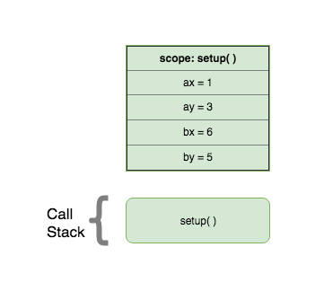
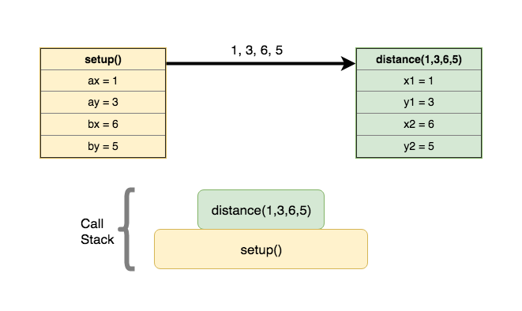
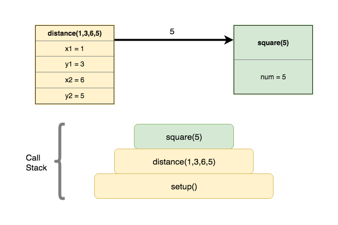
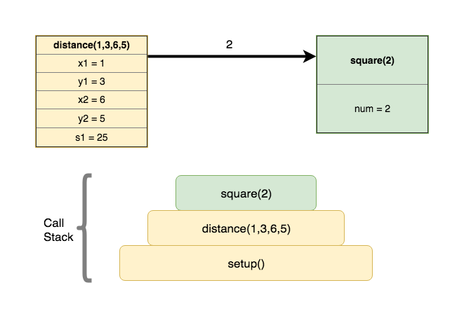
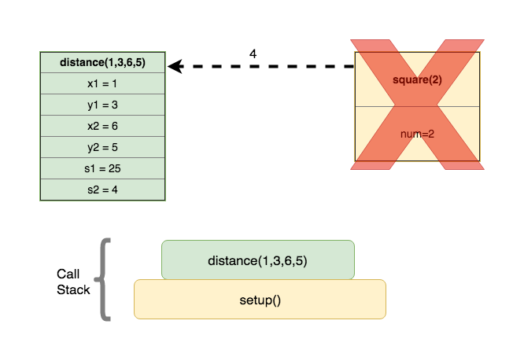
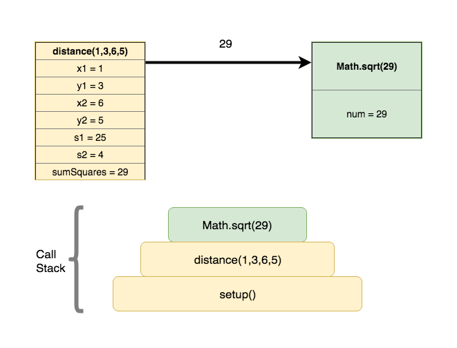
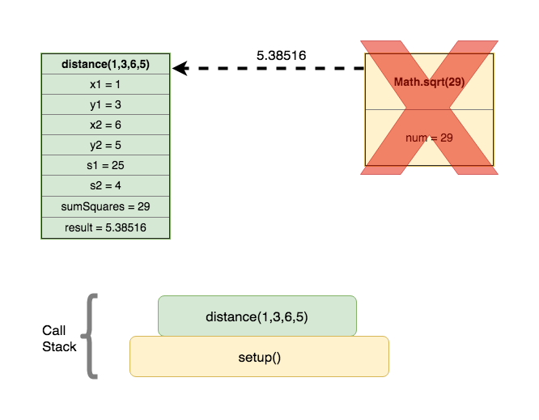
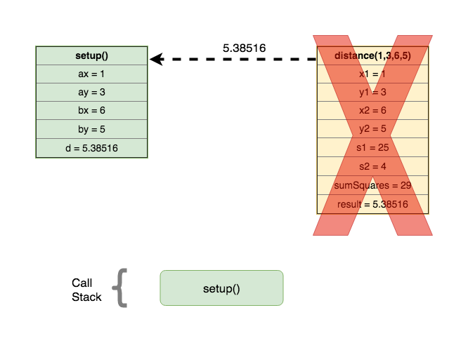

Recursion - function call
Assumed Knowledge:
Learning Outcomes:
- Better understand the concept of parameter passing.
- Familiarize yourself with standard terminology - formal paramters vs. actual parameters.
- Understand the control flow and memory transactions during a function call.
- Understand the concept of Call Stack.
Author: Gaurav Gupta
Formal parameters vs. actual parameters
- Formal parameter is the name used for the variable in the function definition.
- Actual parameter is the value copied into the formal parameter during a function call.
Consider the following example:
void setup() {
int c = 10;
int d = square(c);
int e = square(6);
int f = square(d/20 + e/9);
}
int square(int val) {
int result = val * val;
return result;
}
In the above example,
- Formal parameter in function
squareisval. - Actual parameter in the function call
square(c)isc(10). - Actual parameter in the function call
square(6)is 6. - Actual parameter in the function call
square(d/20 + e/9)isd/4 + e/9(100/20 + 36/9 = 9).
What happens during a function call?
It’s very helpful to understand what happens when a function is called. Consider the following example:
void setup() {
int ax = 1, ay = 3;
int bx = 6, by = 5;
float d = distance(ax, ay, bx, by);
println("Distance: "+d);
}
float distance(int x1, int y1, int x2, int y2) {
int s1 = square(x2-x1);
int s2 = square(y2-y1);
int sumSquares = s1 + s2;
float result = (float)Math.sqrt(sumSquares);
return result;
}
int square(int num) {
int answer = num * num;
return answer;
}
STEP 1: setup function is invoked by JVM (as far as we are concerned)

Function call is placed on the stack.
STEP 2: setup calls distance with parameters 1, 3, 6 and 5.

Another entry is made for the call to distance and placed on the call stack.
STEP 3: distance calls square with parameter 5

A third entry is made for the call to square and placed on the stack.
STEP 4: square returns 25 to distance
Entry for square is taken off the stack. distance becomes the active function.
STEP 5: distance calls square with parameter 2

A third entry is made for the call to square and placed on the stack.
STEP 6: square returns 4 to distance

Entry for square is taken off the stack. distance becomes the active function.
STEP 7: distance calls Math.sqrt with parameter 29

A third entry is made for the call to Math.sqrt and placed on the stack.
STEP 8: Math.sqrt returns 5.38516 to distance

Entry for square is taken off the stack. distance becomes the active function.
STEP 9: distance returns 5.38516 to setup

Entry for distance is taken off the stack. setup becomes the active function.
STEP 10: setup terminates
Entry for setup is taken off the stack. Call stack is now empty. Program has now finished execution.